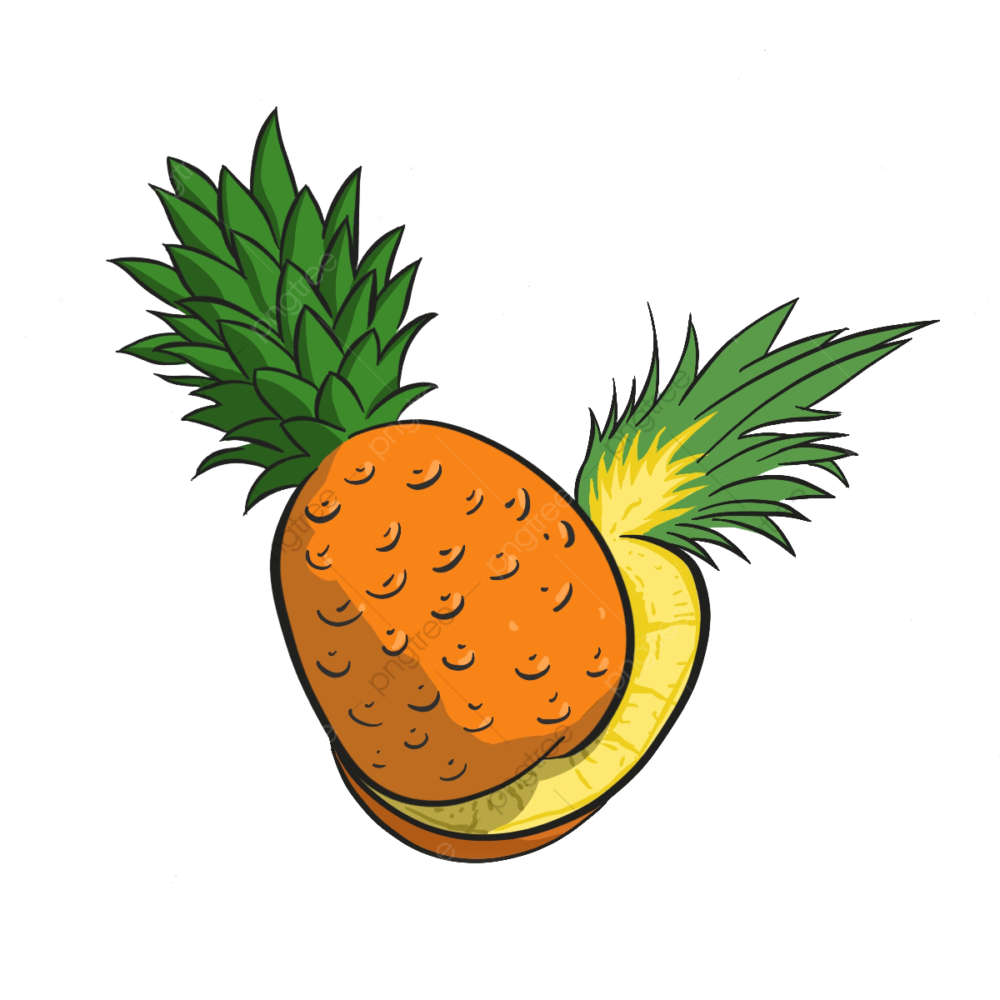

Fresh Life
El sistema Fresh Life será una página diseñada y enfocada para crear unos mejores hábitos
de alimentación en nuestros usuarios permitiéndoles el poder alimentarse mejor con productos
que tengan a su disposición o mediante pedidos que nuestra página facilitara a los usuarios y
ayudará a conocer más restaurantes que ofrecen una mejor alternativa al momento de alimentarse
Crear un sistema que nos permita acceder a recetas saludables y lugares de ventas de comida sana
por lo cual nos vamos a enfocar más en el sector de Quito con el fin de crear un hábito en las personas
sobre la comida saludable. Con este sistema brindaremos la ubicación de los lugares de comida sana para
nuestros clientes y de los usuarios en general.
Para evitar los gastos de los clientes, crearemos una sección que contengan varias recetas de alimentos
que sean fácilmente consumibles y accesibles en donde el cliente lo pueda replicar, por lo cual se mostrará
mediante videotutoriales y una descripción de los productos que necesita.
